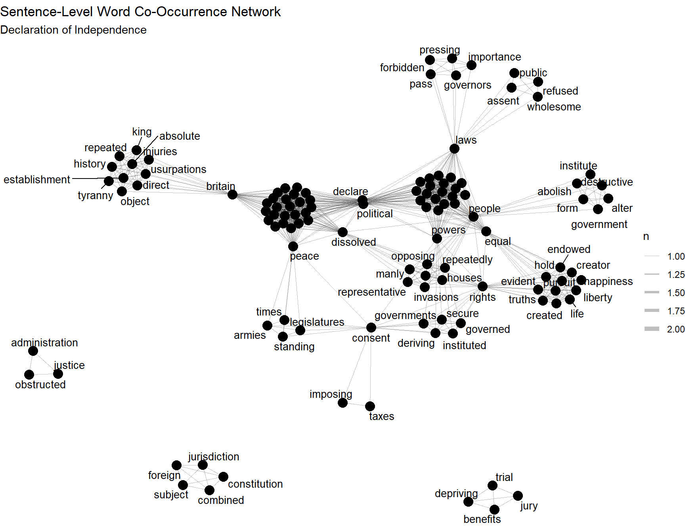
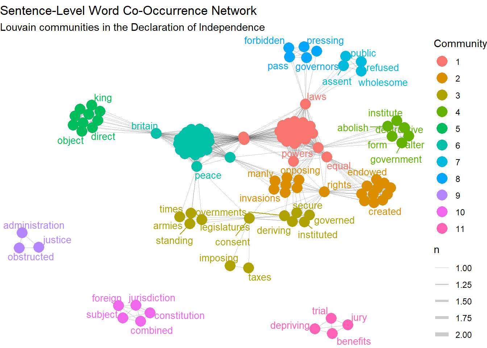

library(tidyverse)
library(tidytext)
library(widyr)
library(igraph)
library(ggraph)
library(stringr)14 Text Networks
15 Text Networks
15.1 Texts as Relational Objects
Text networks offer a way to study discourse as a relational object. That is their central value, and it is what keeps them useful even as computational text analysis has expanded into increasingly elaborate forms. In many research settings, the key issue is not simply that certain words appear frequently or that a corpus can be partitioned into latent topics. The more important question concerns how meanings are organized. Words derive part of their significance from the terms that surround them, the concepts they connect, and the larger semantic regions in which they recur. A text network provides one way to represent this organization formally. In that respect, it belongs to a longer sociological effort to measure meaning structures rather than treating culture as something that can only be approached impressionistically (Mohr 1998; Mohr and Duquenne 1997). Texts have structure, and part of that structure lies in the pattern of associations among words. Text networks are the key to unlocking this structure.
At a general level, a text network is a graph in which nodes represent units of textual material and edges represent relations among those units. The nodes may be words, phrases, named entities, concepts, documents, or speakers. The ties may represent co-occurrence, adjacency, shared appearance in the same text, or more complex relations such as semantic similarity. What matters is that text is no longer being treated as a mere inventory. Instead, it is represented as a structured set of associations. This move fits well with relational sociology and cultural sociology, where classification, symbolic boundaries, and the organization of meaning have long been central concerns. Breiger’s (1974) classic argument about duality remains relevant here because it shows how relations among elements can be understood through shared participation in larger structures. Later work in cultural sociology and computational text analysis has extended this insight by showing how meanings can be mapped, compared, and measured across texts, fields, and publics (Bail 2014; Goldberg 2024). Recent sociological work has also used semantic network analysis to track shifts in institutional meaning across texts over time, as in Puetz, Davis, and Kinney’s (2021) analysis of human rights language in peace agreements.
This makes text networks especially useful for sociological research on rhetoric, politics, institutions, and culture. Terms such as rights, people, freedom, order, threat, or justice rarely operate as isolated lexical items. Their force depends on the clusters in which they appear, the contrasts they imply, and the broader discursive arrangements in which they are embedded. If one wants to know how a discourse is organized, then frequency alone is rarely enough. A list of common terms can tell us what appears often, but not how concepts hold together or what bridges otherwise separate vocabularies. Text networks are attractive because they make these relations visible in a comparatively direct way. Recent methodological work in sociology has been especially helpful on this point, emphasizing that computational text analysis is most valuable when the relations under study remain theoretically interpretable rather than being surrendered entirely to opaque latent representations (Stoltz and Taylor 2024). What matters is that a text network gives us a way to see and discuss how discourse is organized.
15.2 Why This Chapter Uses a Step-by-Step Example
The discussion that follows begins with a comparatively simple representation, that is, a sentence-level word co-occurrence network constructed in R. This choice is partly practical, though not only practical. It keeps the relation under analysis close to the text and therefore makes the logic of the network easier to inspect. A document is broken into sentences, sentences are reduced to words, common terms are removed, co-occurring pairs are counted, and those pairings are then rendered as a graph. The process is elementary enough to follow in detail, but already sufficient to show how a text can be converted into a relational object.
Other representations are possible, and in many cases desirable. One may build document-term bipartite networks, semantic networks based on embeddings, or socio-semantic networks linking actors and concepts. These alternatives raise important questions of their own. But they are easier to assess once the more basic workflow is in view. Sentence-level co-occurrence provides a good starting point because the tie remains interpretable at every stage. Here, words are related because they recur together within a bounded local context. That is enough to make the broader logic of text network analysis visible without prematurely complicating it.
15.3 What a Text Network Represents
There is no single emergent and “natural” text network hidden inside a text, waiting to be extracted by a sufficiently clever algorithm. Every text network is constructed. The network one obtains depends on what one treats as a node, what relation is taken to matter, how ties are weighted, and what level of language is being represented. That point deserves emphasis because network diagrams can create the impression that structure has simply been revealed. In practice, the resulting graph is a representation of one aspect of discourse, produced through a chain of theoretical and methodological decisions. What matters, then, is whether the resulting network is justified by the analytic question
The most common form is the word co-occurrence network. In this representation, two words are connected if they appear within the same textual context. That context may be a sentence, paragraph, document, or moving window of tokens. The edge may be binary, indicating simple co-presence, or weighted by the number of co-occurrences. This form remains popular because it is intuitive, relatively easy to construct, and often easy to explain. If a text repeatedly places rights near liberty, government, and people, while placing king near injuries, laws, and tyranny, the resulting network can reveal that organization in a compact way. For many chapter-length analyses, and especially for teaching, this is the best place to begin because the analytic logic remains close to the text itself.
A second common form is the document-term bipartite network. Here one set of nodes consists of documents and the other of terms or concepts. A tie indicates that a term appears in a document, sometimes weighted by frequency or by a measure such as tf-idf. This representation preserves the original relation between texts and vocabularies more directly than a one-mode word network. It is useful when the analyst wants to compare documents, trace the distribution of meanings across texts, or project later into a word-word or document-document network. In sociological terms, this bipartite structure is often attractive because it keeps the analyst closer to the duality of texts and concepts rather than collapsing everything immediately into pairwise term associations (Breiger 1974). For present purposes, however, the simpler sentence-level co-occurrence network is a more transparent entry point.
More specialized forms are also possible. One may construct syntactic networks in which words are linked by grammatical dependency, semantic networks in which terms are tied through embedding-based similarity, or socio-semantic networks in which social actors and meanings are analyzed together. The latter is particularly promising in sociology because it makes it possible to analyze how social relations and semantic relations interact, rather than treating them as separate domains. But the choice among these alternatives should be driven by the underlying problem, not by the mere availability of a method. If the analyst is interested in local rhetorical construction, sentence-level co-occurrence may be sufficient. If the focus is on how organizations or publics distribute meanings across texts, a bipartite or socio-semantic representation may be more appropriate. The chapter therefore stays with the simpler case while keeping the broader range of possibilities in view for further study down the road.
15.4 Example Text: The Declaration of Independence
A useful teaching example is the Declaration of Independence (United States, 1776). The document is especially well suited to text network analysis because it has a clear rhetorical architecture. Thomas Jefferson opens the document with an abstract statement of political principle, rooted in enlightenment era liberal political philosophy, but then moves into a long list of grievances against the British crown, and concludes with a declaration of sovereign separation from Great Britain. These are not just different sections of the text where introductory matter is followed by a more substantive component, for example. They are organized around somewhat distinct vocabularies that remain linked to one another. That makes the document especially suitable for showing what a text network can reveal even in the case of a single, relatively short text.
This example also has a practical advantage for beginners. First, it is an important document worth serious scholarly analysis. Second, the Declaration is short enough that the reader can plausibly keep the whole text in mind while working through the code. One reason text analysis can feel alienating at first is that the object under study disappears behind the workflow. Here, that risk is reduced. The reader can compare the network output to a familiar document and judge whether the graph is capturing something recognizable about the text’s structure. The point is to give a more explicit account of how the document is organized.
15.5 Step 1: Load Packages and the Text
The first step is to load the R packages that will help us tokenize the text, count co-occurrences, and draw a graph. We use tidyverse for data handling, tidytext for tokenization and stopword removal, widyr for pairwise counting, igraph for graph construction, ggraph for visualization, and stringr for splitting the text into sentences. Even this early stage is worth pausing over, because beginners are often unsure what the packages are doing. The easiest way to think about them is division of labor: one package helps us tidy the text, another helps us count word pairs, and another helps us turn those counts into a network.
Now we load the text itself. For simplicity, I place a shortened version of the Declaration directly into the script. In a real project, the text might come from a .txt file or from a larger folder of documents. At this stage, though, it is useful to keep everything visible in one place. This should populate the text of the Declaration into R.
declaration_text <- "
When in the Course of human events, it becomes necessary for one people to dissolve the political bands which have connected them with another, and to assume among the powers of the earth, the separate and equal station to which the Laws of Nature and of Nature's God entitle them, a decent respect to the opinions of mankind requires that they should declare the causes which impel them to the separation.
We hold these truths to be self-evident, that all men are created equal, that they are endowed by their Creator with certain unalienable Rights, that among these are Life, Liberty and the pursuit of Happiness. That to secure these rights, Governments are instituted among Men, deriving their just powers from the consent of the governed. That whenever any Form of Government becomes destructive of these ends, it is the Right of the People to alter or to abolish it, and to institute new Government.
The history of the present King of Great Britain is a history of repeated injuries and usurpations, all having in direct object the establishment of an absolute Tyranny over these States.
He has refused his Assent to Laws, the most wholesome and necessary for the public good.
He has forbidden his Governors to pass Laws of immediate and pressing importance.
He has dissolved Representative Houses repeatedly, for opposing with manly firmness his invasions on the rights of the people.
He has obstructed the Administration of Justice.
He has kept among us, in times of peace, Standing Armies without the Consent of our legislatures.
He has combined with others to subject us to a jurisdiction foreign to our constitution.
For imposing Taxes on us without our Consent.
For depriving us in many cases, of the benefits of Trial by Jury.
We, therefore, the Representatives of the united States of America, in General Congress, Assembled, do publish and declare, That these United Colonies are, and of Right ought to be Free and Independent States; that they are Absolved from all Allegiance to the British Crown, and that all political connection between them and the State of Great Britain, is and ought to be totally dissolved; and that as Free and Independent States, they have full Power to levy War, conclude Peace, contract Alliances, establish Commerce, and to do all other Acts and Things which Independent States may of right do.
"15.6 Step 2: Split the Text into Sentences
Because we want a sentence-level co-occurrence network, we first divide the text into sentences. You could make other choices, like paragraph level division, or many others, but sentence-level structure gives us the local context within which words will be considered related for a document like the Declaration of Independence. If two words appear in the same sentence, we will later count that as a tie. This is one of the most important choices in the workflow. The network depends on how the text is broken into units, and beginners should get in the habit of treating that as a substantive decision rather than as a background technicality.
sentences <- tibble(text = declaration_text) |>
mutate(sentence = str_split(text, "(?<=[.!?])\\s+")) |>
unnest(sentence) |>
mutate(sentence_id = row_number()) |>
filter(str_detect(sentence, "[A-Za-z]"))
sentences# A tibble: 14 × 3
text sentence sentence_id
<chr> <chr> <int>
1 "\nWhen in the Course of human events, it becomes neces… "\nWhen… 1
2 "\nWhen in the Course of human events, it becomes neces… "We hol… 2
3 "\nWhen in the Course of human events, it becomes neces… "That t… 3
4 "\nWhen in the Course of human events, it becomes neces… "That w… 4
5 "\nWhen in the Course of human events, it becomes neces… "The hi… 5
6 "\nWhen in the Course of human events, it becomes neces… "He has… 6
7 "\nWhen in the Course of human events, it becomes neces… "He has… 7
8 "\nWhen in the Course of human events, it becomes neces… "He has… 8
9 "\nWhen in the Course of human events, it becomes neces… "He has… 9
10 "\nWhen in the Course of human events, it becomes neces… "He has… 10
11 "\nWhen in the Course of human events, it becomes neces… "He has… 11
12 "\nWhen in the Course of human events, it becomes neces… "For im… 12
13 "\nWhen in the Course of human events, it becomes neces… "For de… 13
14 "\nWhen in the Course of human events, it becomes neces… "We, th… 14At this stage, we still have the text, but it is now arranged with one sentence per row. That matters because the sentence is going to become the context unit for co-occurrence. In more advanced work, the analyst might use paragraphs, clauses, or moving windows instead. For a beginner’s example, sentence-level context works well because it is easy to explain and tends to capture a reasonably local rhetorical relation.
15.7 Step 3: Tokenize into Words
Next, we tokenize the sentences, which means we split each sentence into individual words. The unnest_tokens() function from tidytext turns the data into a one-word-per-row format that is especially convenient for further processing. Again, this is worth inspecting rather than treating as a magical step. Once the text has been tokenized, the analyst can see exactly what the data look like before any network exists.
words <- sentences |>
unnest_tokens(word, sentence)
words# A tibble: 394 × 3
text sentence_id word
<chr> <int> <chr>
1 "\nWhen in the Course of human events, it becomes necessar… 1 when
2 "\nWhen in the Course of human events, it becomes necessar… 1 in
3 "\nWhen in the Course of human events, it becomes necessar… 1 the
4 "\nWhen in the Course of human events, it becomes necessar… 1 cour…
5 "\nWhen in the Course of human events, it becomes necessar… 1 of
6 "\nWhen in the Course of human events, it becomes necessar… 1 human
7 "\nWhen in the Course of human events, it becomes necessar… 1 even…
8 "\nWhen in the Course of human events, it becomes necessar… 1 it
9 "\nWhen in the Course of human events, it becomes necessar… 1 beco…
10 "\nWhen in the Course of human events, it becomes necessar… 1 nece…
# ℹ 384 more rowsThis output is not yet ready for analysis. It still includes many very common words, and it has not yet been cleaned for substantive use. But it is the essential intermediate form. Every row now shows a word and the sentence in which it appeared. Text network analysis often becomes easier to understand once one sees that the graph will ultimately be built from a table like this.
15.8 Step 4: Clean the Words
Now we do a first round of cleaning. We remove common stopwords such as the, and, and of. These words are crucial for grammar, but they are usually not very useful for a basic semantic network because they connect almost everything to everything else. We also keep only alphabetic tokens so that odd fragments do not clutter the graph.
words_clean <- words |>
filter(str_detect(word, "^[a-z]+$")) |>
anti_join(stop_words, by = "word")
words_clean# A tibble: 141 × 3
text sentence_id word
<chr> <int> <chr>
1 "\nWhen in the Course of human events, it becomes necessar… 1 human
2 "\nWhen in the Course of human events, it becomes necessar… 1 even…
3 "\nWhen in the Course of human events, it becomes necessar… 1 peop…
4 "\nWhen in the Course of human events, it becomes necessar… 1 diss…
5 "\nWhen in the Course of human events, it becomes necessar… 1 poli…
6 "\nWhen in the Course of human events, it becomes necessar… 1 bands
7 "\nWhen in the Course of human events, it becomes necessar… 1 conn…
8 "\nWhen in the Course of human events, it becomes necessar… 1 assu…
9 "\nWhen in the Course of human events, it becomes necessar… 1 powe…
10 "\nWhen in the Course of human events, it becomes necessar… 1 earth
# ℹ 131 more rowsThis is a good place to slow down and inspect the result. Beginners often want to push ahead to the visualization, but text analysis improves when one regularly looks at intermediate outputs. At this point, the word list should feel closer to the conceptual language of the document. We have not built a network yet. We have only prepared the terms from which the network will later be assembled.
Sometimes it is also useful to remove a few text-specific words that are not part of the default stopword list but still dominate the graph without adding much analytical value. In the Declaration, a term such as us may appear often enough to clutter the network while telling us relatively little about the broader semantic structure.
custom_stop <- tibble(word = c("us", "among", "shall", "may", "one"))
words_clean <- words_clean |>
anti_join(custom_stop, by = "word")
words_clean# A tibble: 141 × 3
text sentence_id word
<chr> <int> <chr>
1 "\nWhen in the Course of human events, it becomes necessar… 1 human
2 "\nWhen in the Course of human events, it becomes necessar… 1 even…
3 "\nWhen in the Course of human events, it becomes necessar… 1 peop…
4 "\nWhen in the Course of human events, it becomes necessar… 1 diss…
5 "\nWhen in the Course of human events, it becomes necessar… 1 poli…
6 "\nWhen in the Course of human events, it becomes necessar… 1 bands
7 "\nWhen in the Course of human events, it becomes necessar… 1 conn…
8 "\nWhen in the Course of human events, it becomes necessar… 1 assu…
9 "\nWhen in the Course of human events, it becomes necessar… 1 powe…
10 "\nWhen in the Course of human events, it becomes necessar… 1 earth
# ℹ 131 more rows15.9 Step 5: Count Co-Occurring Word Pairs
Now we are ready to define the relation that will become the edge in the network. Here, two words are connected if they appear in the same sentence. The pairwise_count() function counts how often each pair of words appears together across all sentences. This is the moment where the text begins to turn into a relational object.
pairs <- words_clean |>
pairwise_count(word, sentence_id, sort = TRUE, upper = FALSE)
pairs# A tibble: 994 × 3
item1 item2 n
<chr> <chr> <dbl>
1 political declare 2
2 human events 1
3 human people 1
4 events people 1
5 human dissolve 1
6 events dissolve 1
7 people dissolve 1
8 human political 1
9 events political 1
10 people political 1
# ℹ 984 more rowsThis table is the real foundation of the network. Each row represents a pair of words and the number of sentences in which they appeared together. If rights and people co-occur several times, their edge will later be stronger than a pair that appears together only once. In other words, the network exists in tabular form before it exists visually. Looking at this table also helps prevent a common beginner mistake, which is to think that the graph somehow emerges independently of the counting logic.
It is often helpful to inspect the strongest ties before graphing anything.
pairs |>
slice_head(n = 20)# A tibble: 20 × 3
item1 item2 n
<chr> <chr> <dbl>
1 political declare 2
2 human events 1
3 human people 1
4 events people 1
5 human dissolve 1
6 events dissolve 1
7 people dissolve 1
8 human political 1
9 events political 1
10 people political 1
11 dissolve political 1
12 human bands 1
13 events bands 1
14 people bands 1
15 dissolve bands 1
16 political bands 1
17 human connected 1
18 events connected 1
19 people connected 1
20 dissolve connected 1Even without a visualization, this output gives a first sense of the local semantic structure of the text. One can begin to see which terms repeatedly travel together.
15.10 Step 6: Filter for Readability
If we graph every pair, the network will usually be too dense to read. For teaching and exploratory work, it is common to keep only stronger ties. For this example, I keep the fifty strongest ties so the graph remains readable.
pairs_filtered <- pairs |>
slice_max(order_by = n, n = 50)This step is important to discuss explicitly because it teaches a general lesson: network visualizations are often simplified representations. The graph one sees is not the totality of all possible relations in the text. It is a more legible version that emphasizes stronger or more frequent ties. That is not a flaw. It is usually necessary. The important thing is to know what has been filtered out and why.
15.11 Step 7: Turn the Pairs into a Graph
Once we have a table of filtered word pairs, we can convert it into a graph object using igraph. This is the step where the data change form. Up to this point, the analysis has proceeded through tables. Now the pair list becomes a network that can be summarized and visualized.
word_graph <- graph_from_data_frame(pairs_filtered, directed = FALSE)
word_graphIGRAPH 10eba72 UN-- 120 994 --
+ attr: name (v/c), n (e/n)
+ edges from 10eba72 (vertex names):
[1] political--declare human --events human --people
[4] events --people human --dissolve events --dissolve
[7] people --dissolve political--human political--events
[10] political--people political--dissolve human --bands
[13] events --bands people --bands dissolve --bands
[16] political--bands human --connected events --connected
[19] people --connected dissolve --connected political--connected
[22] bands --connected human --assume events --assume
+ ... omitted several edgesFor beginners, it helps to understand that the graph object is not mysterious either. It is simply another way of storing the same relational information, one that is especially useful for network analysis and plotting.
15.12 Step 8: Examine the Most Connected Words
Before plotting the network, it is useful to identify the most connected terms. This helps show that network analysis is not only about pictures. The graph can also be summarized numerically. Here, I compute degree, weighted degree, and betweenness centrality. These measures are common in network analysis and can provide a quick sense of which words sit near the center of the document’s semantic structure.
centrality_tbl <- tibble(
word = V(word_graph)$name,
degree = degree(word_graph),
weighted_degree = strength(word_graph),
betweenness = betweenness(word_graph, directed = FALSE)
) |>
arrange(desc(weighted_degree))
centrality_tbl |> slice_head(n = 15)# A tibble: 15 × 4
word degree weighted_degree betweenness
<chr> <dbl> <dbl> <dbl>
1 political 51 51 872.
2 declare 51 51 872.
3 people 39 39 843.
4 britain 38 38 970
5 dissolved 37 37 573.
6 equal 36 36 657.
7 laws 33 33 902
8 peace 33 33 415.
9 powers 31 31 420.
10 rights 28 28 564.
11 representatives 28 28 0
12 united 28 28 0
13 america 28 28 0
14 congress 28 28 0
15 assembled 28 28 0 In a document such as the Declaration, one would expect words tied to principle, grievance, and sovereignty to appear prominently. And we do see a pattern that reflects this prior, with terms like “political,” “people,” “declare,” and “dissolved” being some of the best connected in the graph. Looking at this table first can also make the later visualization easier to interpret because the reader already has a sense of which terms are likely to occupy central positions.
15.13 Step 9: Visualize the Network
Now we can draw the network. This is the step many beginners are waiting for, but it works much better once the earlier stages have been made clear. The graph is not an isolated product. It is the visual consequence of all the choices that came before it.
set.seed(1776)
ggraph(word_graph, layout = "fr") +
geom_edge_link(aes(width = n), alpha = 0.25) +
geom_node_point(size = 4) +
geom_node_text(aes(label = name), repel = TRUE, size = 3.5) +
scale_edge_width(range = c(0.2, 2)) +
theme_void() +
labs(
title = "Sentence-Level Word Co-Occurrence Network",
subtitle = "Declaration of Independence"
)
This plot gives a visual map of the strongest word relationships in the text. Words that appear together often are connected by thicker edges. Words with many connections tend to occupy more central positions. Clusters of connected words often correspond to different semantic regions of the document. In this case, one would expect some separation among the language of principle, the language of grievance, and the language of sovereignty. The precise appearance of the graph depends on the layout algorithm, but the broad structure should still be interpretable.
15.14 Step 10: Identify Clusters
A final beginner-friendly step is to identify clusters or communities in the graph. These are groups of words that are more densely connected to each other than to the rest of the network. This is helpful because it moves the analysis beyond visualization alone. The graph becomes something that can be summarized as well as seen.
communities <- cluster_louvain(word_graph)
tibble(
word = names(membership(communities)),
community = membership(communities)
) |>
arrange(community, word)# A tibble: 120 × 2
word community
<chr> <membrshp>
1 assume 1
2 bands 1
3 connected 1
4 decent 1
5 declare 1
6 dissolve 1
7 earth 1
8 entitle 1
9 equal 1
10 events 1
# ℹ 110 more rowsThis output often helps the reader identify which words belong to the same semantic region. In a classroom setting, this can be a good prompt for discussion. One can ask whether the detected clusters correspond to familiar rhetorical divisions in the text, or whether they reveal a structure that is less obvious from ordinary reading.
We can also plot the communities in our graph as follows:
communities <- cluster_louvain(word_graph)
V(word_graph)$community <- factor(membership(communities))
set.seed(1776)
ggraph(word_graph, layout = "fr") +
geom_edge_link(aes(width = n), alpha = 0.2) +
geom_node_point(aes(color = community), size = 5) +
geom_node_text(aes(label = name, color = community), repel = TRUE, size = 3.5, show.legend = FALSE) +
scale_edge_width(range = c(0.2, 2)) +
theme_void() +
labs(
title = "Sentence-Level Word Co-Occurrence Network",
subtitle = "Louvain communities in the Declaration of Independence",
color = "Community"
)Warning: ggrepel: 68 unlabeled data points (too many overlaps). Consider
increasing max.overlaps
15.15 What the Example Shows
This simple example already demonstrates the main value of a text network. The Declaration of Independence is not a text where an understanding requires vast computational analysis. The broad structure is already familiar - this is a text many of us have read many times. Still, the network formalizes that structure in a useful way. It shows how words related to political principle, grievances against the crown, and political separation are organized into distinguishable but connected regions. While broader gestures toward liberal governance (such as “constitution” “subject” “jurisdiction”) inhabit a different community. What the network gives us, in other words, is a more explicit view of how the discourse is organized.
For beginners, the larger lesson is methodological. A text network is not produced in a single magical step. It emerges from a sequence of ordinary operations: 1.) choose a text, 2.) define a context (sentence, paragraph, etc..), tokenize, clean, count co-occurrences, filter, graph, and interpret. Once that sequence is understood, more advanced forms of text analysis become much easier to approach. The conceptual point and the coding point therefore come together. For present purposes, the advantage is that the network is built step by step, and each step can be investigated.
15.16 Conclusion
Text networks are useful because they force the analyst to specify what kind of relation is being claimed, what level of language matters, and how textual structure should be represented in the first place. That is part of what makes them valuable for sociology. They fit well with a relational understanding of culture and discourse, while also imposing a welcome discipline on that understanding. Rather than speaking loosely about themes or meanings, the analyst must specify units, ties, and principles of construction. Used carefully, text networks provide not only a way to visualize text, but a framework for asking clearer questions about how discourse is organized.
15.17 References
Bail, Christopher A. 2014. “The Cultural Environment: Measuring Culture with Big Data.” Theory and Society 43(3-4):465-82.
Breiger, Ronald L. 1974. “The Duality of Persons and Groups.” Social Forces 53(2):181-90.
Goldberg, Amir. 2024. “The Sociology of Interpretation.” Annual Review of Sociology 50:241-59.
Mohr, John W. 1998. “Measuring Meaning Structures.” Annual Review of Sociology 24:345-70.
Mohr, John W., and Vincent Duquenne. 1997. “The Duality of Culture and Practice: Poverty Relief in New York City, 1888-1917.” Theory and Society 26(2-3):305-56.
Puetz, Kyle, Andrew P. Davis, and Alexander B. Kinney. 2021. “Meaning Structures in the World Polity: A Semantic Network Analysis of Human Rights Terminology in the World’s Peace Agreements.” Poetics.
Stoltz, Dustin S., and Marshall A. Taylor. 2024. Mapping Texts: Computational Text Analysis for the Social Sciences. New York: Oxford University Press.
United States. 1776. The Declaration of Independence. Washington, DC: National Archives.